首页
市场新闻、强势股票星图与市场镜头。先建立当天市场语境，再决定要研究什么。

AIE1902 · AI Quant Research System
01 · Page map
市场新闻、强势股票星图与市场镜头。先建立当天市场语境，再决定要研究什么。
搜索或上传数据，查看指标，生成策略，并比较净值、回撤与关键绩效指标。
管理多个标的，检查相关性与组合权重，再观察组合结果和个股贡献。
浏览实验、gate、manifest 与报告。每个结论都要能回到具体产物，而不是只停留在页面数字。
02 · Research pipeline
单股与多股页面共用这条研究骨架。页面展示的是结果，真正决定可信度的是每一步都能追溯。
03 · Five real workflows
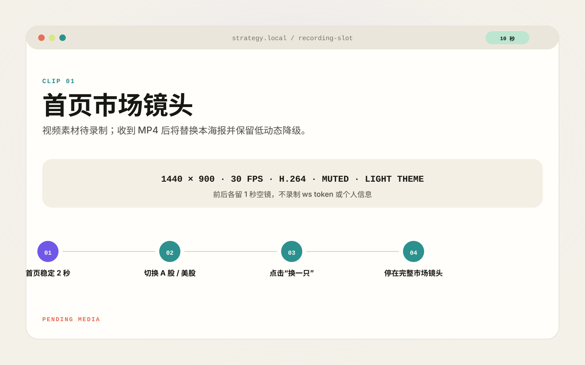
Video pending · 10s美股与 A 股切换、强势股票换一只，最后停在完整市场镜头。
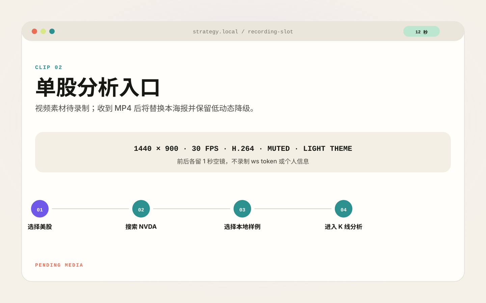
Video pending · 12s选择美股、搜索 NVDA、加载本地样例，直到股票身份区和 K 线出现。
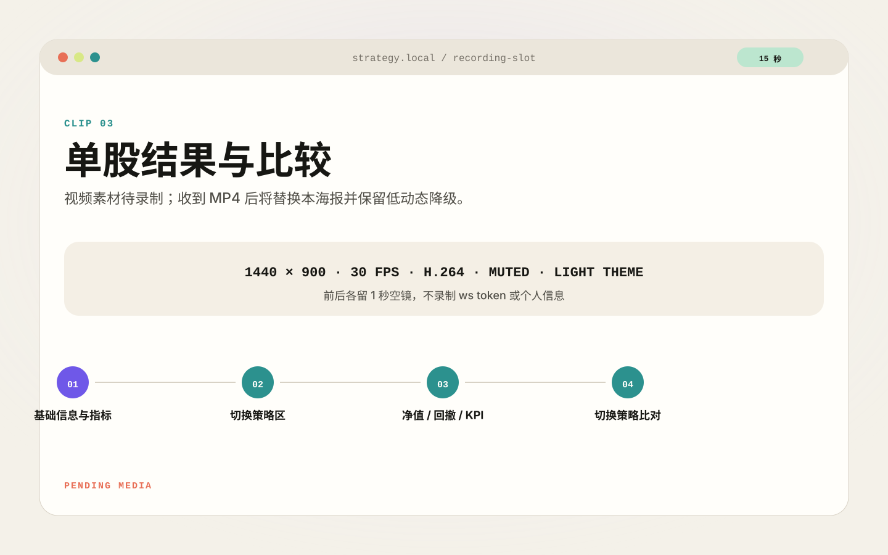
Video pending · 15s从 K 线进入策略区，查看净值、回撤与 KPI，再切换两条已保存策略做比较。
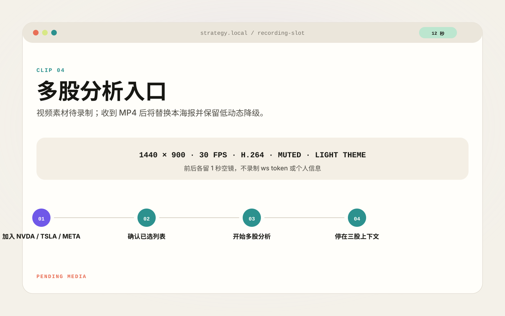
Video pending · 12s加入 NVDA、TSLA、META 本地样例，展示已选列表并进入三股分析上下文。
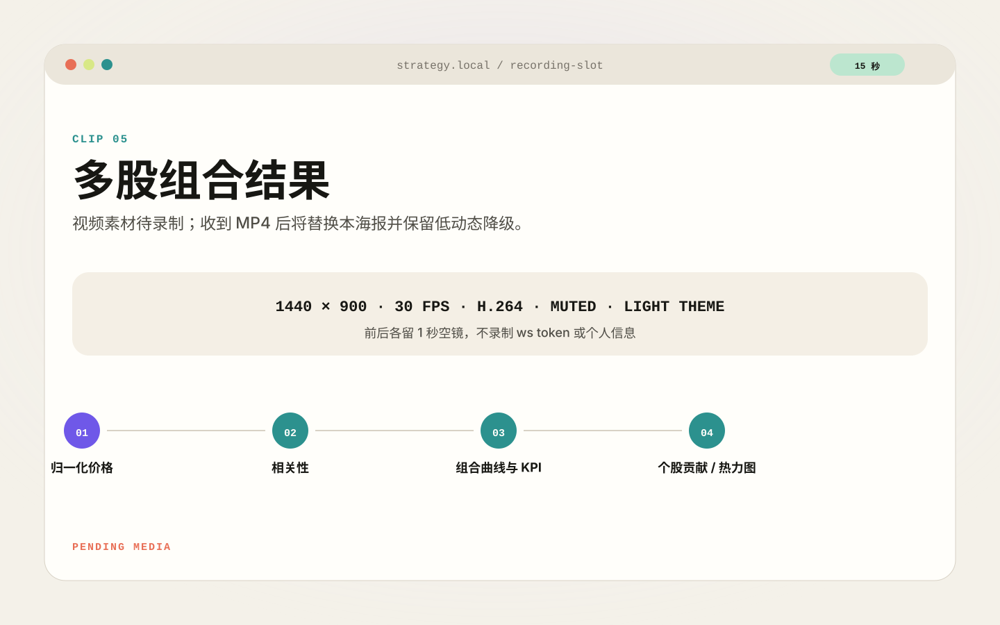
Video pending · 15s查看归一化价格与相关性，再进入等权组合结果、KPI 和个股贡献或周期热力图。
复杂模型、更多因子和更漂亮的阶段结果，都不能自动变成稳定证据。 这段历程记录了我怎样从“把所有东西都用上”，走到先问数据、边界和验证是否成立。
这是我最早、也最自然的想法。既然每个因子都描述了市场的一部分，那把它们全部放进同一个模型，似乎就应该比单独使用更全面。
我先把十个因子放在一起，用随机搜索 SM 寻找参数。那时我的判断很直接：如果搜索空间足够大，总能找到比手工设定更强的组合。
接着我逐步加入 Bayesian、遗传算法、FA/FSM 与机器学习。每加一层复杂度，我都期待它能把前一版的不足补掉，也越来越容易把“方法更先进”误当成“结果会更可靠”。
全量实验给了我第一个意外：更复杂的搜索或模型，有时会在一个市场里领先，却没有在另一个市场里重复同样的排序。复杂度可以带来候选解，但不能替代跨市场验证。
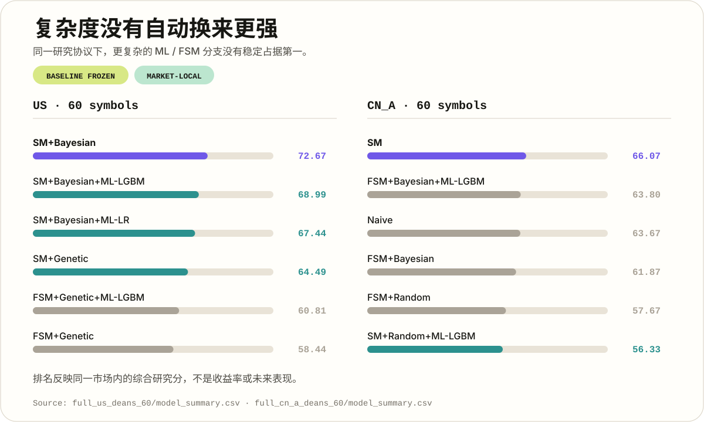
后来我尝试用 MOE 和 Transformer 识别市场状态，希望“历史上相似的时刻”能告诉模型此刻该选哪一套策略。这个方向很吸引人，因为它看起来比固定规则更聪明。
但关键实验提醒我：表征的一致性可以提高，面向真实决策的 query utility 却同时下降。市场状态相似，并不代表未来最佳模型相同。因此这条线被明确标记为 STOP，不能把“更像”包装成“已经训练成功”。
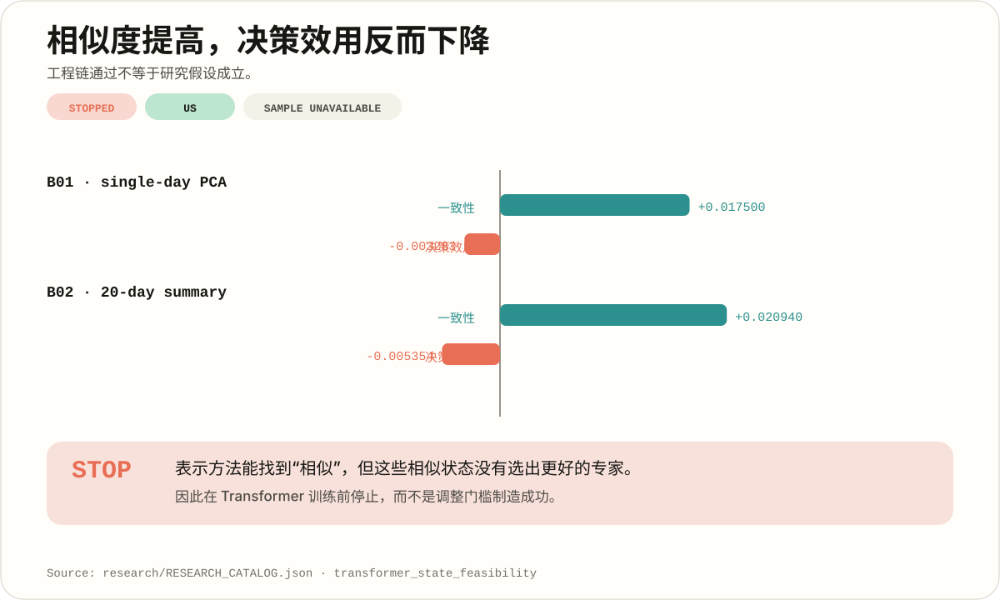
这些失败慢慢改变了我的问题：不再只问“还能加什么模型”，而是问“哪些信息真的被复用”“复杂度有没有被约束”“结论经过了什么 gate”。
我把因子分层、做筛选，再从七个候选因子中留下五个。这不是为了做一个更小的故事，而是为了减少重复信息，让每个权重的意义更清楚。
一开始，我把权重理解成“每个因子贡献多少正面分数”。后来才意识到，一个因子也可以是在当前组合里提供反向约束。允许负权重后，模型不只是加票，也能对拥挤或重复的信号投反对票。
阶段目标值从 0.4230 依次提升到 0.9767、0.9897、0.9911；MACD 与“成交量×动量”获得明显负权重。这个结果不是未来收益承诺，而是优化问题在既定样本与目标函数下的跃迁。
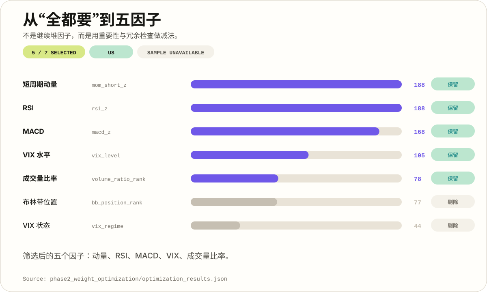
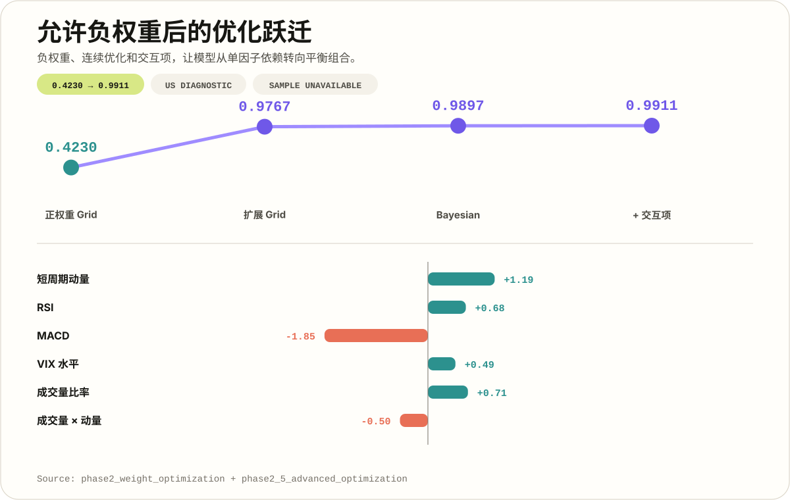
在 CN_A 的冻结比较里，Composite 的 Sharpe 为 0.5972，高于同表中的 SM 0.5277 与 FSM 0.4984。这个结果让我确认：筛选与组合有价值，但我没有采用该表里覆盖不完全配对的平均收益，也没有拿默认 turnover 数字继续讲故事。
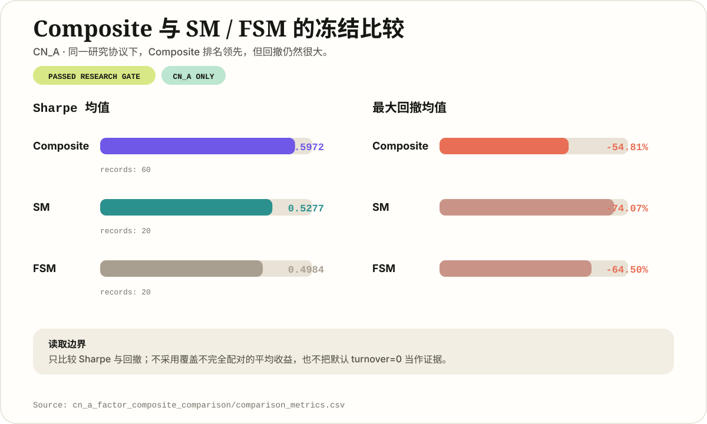
更重要的缺陷来自 US 五只样例诊断：Composite 几乎一直处在满仓状态。它能告诉我“想持有”，却不够擅长告诉我什么时候松手。这个发现直接催生了 Advisor。
我围绕 trend、reversion、macro cap、relative strength 四类 Advisor，组合出七种 policy。早期三折实验里，composite_plus_reversion 获得 admission，看起来像是终于找到了修正“拿住不松”的方法。
但更严格的四折验证把结论重新拉回地面：所有 policy 都是 0/4 通过。所以准确说法不是“Advisor 已经解决问题”，而是 Advisor 找到了有效方向，但尚不能宣称在所有窗口稳定准入。
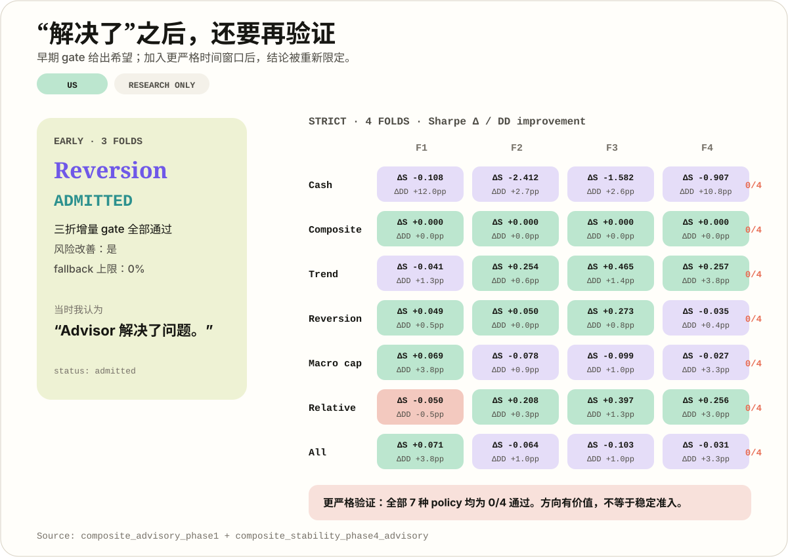
回看整个过程，我最重要的变化不是又学会了一个算法，而是知道怎样把一个模糊直觉变成实验，再让失败结果迫使自己修正问题。
AI 可以帮助我设计、执行和复核大量实验，提醒我比较边界、检查产物和追问证据；但市场选择、假设设定、风险判断和最终解释，仍然需要人承担。我想留下的不是“下一只股票”，而是一套能够继续被质疑、被复现、被改进的研究方法。
Research takeaway
这个平台最终交付的，不是一句“看多”或“看空”，而是从数据源、因子构造、信号生成，到回测比较、失败边界和准入状态的一整条证据链。
页面中的图也遵守同一个原则：US 与 CN_A 不混用，正式冻结结果与诊断产物分开，缺失数据保持缺失，个人阶段记录保留其当时语境。
The last page
从数据来源到模型比较，从正面结果到失败边界，这个平台交付的不是“下一只股票”， 而是一套可以解释、复现和继续质疑的研究方法。